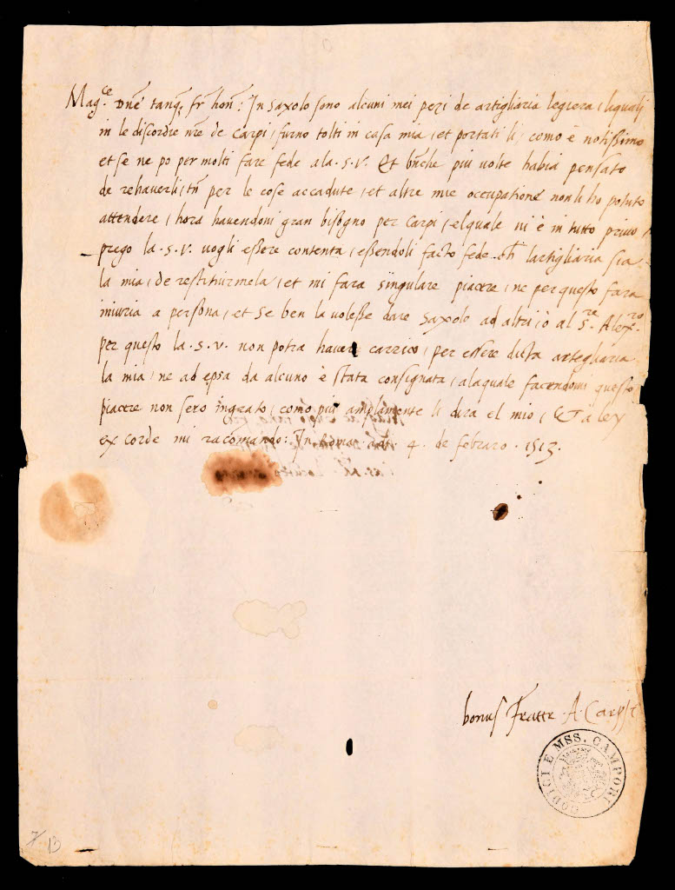
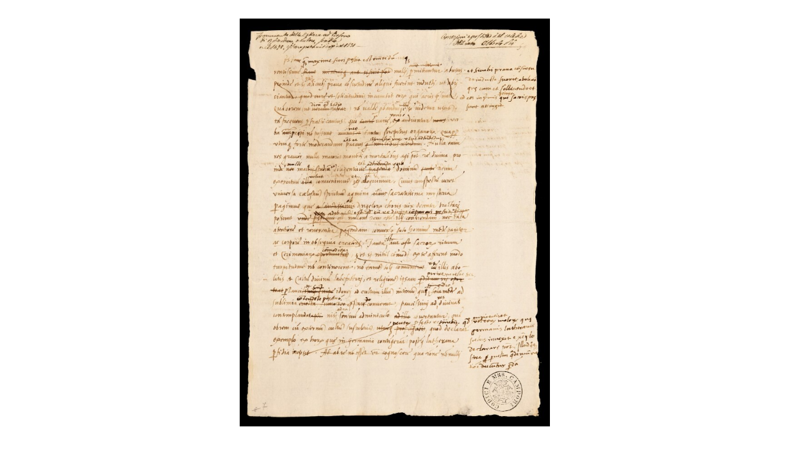

Lettera a Vit Fürst

Usa la rotellina del mouse per lo zoom e trascina l'immagine per spostarti.
|
Magnifice domine tanquam frater honorande: In Saxolo sono alcuni miei pezi de artigliaria legiera, liquali in le discordie nostre de Carpi, furono tolti in casa mia, et portati lì, como è notissimo, et se ne po per molti fare fede alla .S.V. Et benché più volte habia pensato de rehaverli, tamen per le cose accadute, et altre mie occupatione non li ho potuto attendere, hora havendoni gran bisogno per Carpi, elquale ni è in tutto privo, prego la .S.V. vogli essere contenta, essendoli facto fede che lartigliaria sia la mia, de restituirmela, et mi farà singulare piacere, né per questo farà iniuria a persona, et se ben la volesse dare Saxolo ad altri, o al s.re Alex.ro, per questo la .S.V. non potrà haver carrico, per essere dicta artigliaria la mia, né ad epsa da alcuno è stata consignata, alaquale facendomi questo piacere non serò ingrato, como più amplamente li dirà el mio. Et a ley ex corde mi raccomando. In Roma a dì 4 de febraro 1513. |
|
| Segnatura | Raccolta Campori, Autografoteca Campori, Lettera P, Pio di Savoia, Alberto (1475-1531) , c. 13 |
|---|---|
| Collezione | Autografoteca Campori / Lettera P / Pio di Savoia, Alberto (1475-1531) |
| Persone | Fürst, Vit (destinatario) ; Pio di Savoia, Alberto III (signore di Carpi) (autore) |
| Luoghi citati | Roma (data topica) |
| Datazione | 04-02-1513 |
Items correlati
